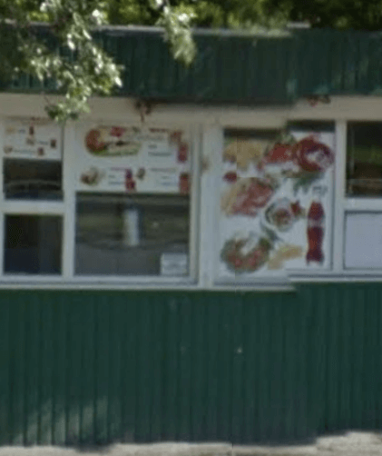
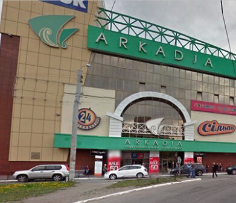

Шаурма у м.Шулявская
58 комментариев
158 голосов
23 Февраля 2017
расположена в очень людном месте, а следовательно стабильно имеет большой поток покупателей...
Читать далее»
19 Февраля 2017
в целом, мне очень понравилась шаурма в этой закусночной /* может как-то по другому */, брал двойную с бараниной...
Читать далее»

Оставить отзыв
Шаурма у ст.т."Полевая"
145 комментариев
231 голос
23 Февраля 2017
прочитал про эту шаву в "подслушано в кпи", отзывы были крайне положительные, мол шава большая и вообще все норм...
Читать далее»
22 Февраля 2017
расположена прямо в парке, но выторг средний; повар аккуратный и заведение чистое...
Читать далее»
22 Февраля 2017
как то раз, волею судеб мне пришлось попробовать шаву на поляне...
Читать далее»

Оставить отзыв
Шаурма у входа в тц."Arkadia"
28 комментариев
124 голоса
23 Февраля 2017
на счет это шаурмичной не могу сказать ничего резко плохого, как и резко хорошего ...
Читать далее»
22 Февраля 2017
внешне всё не плохо, но не единожды было замечено что повар не пользуется перчатками, к своей работе относиться явно не ответственно;
Читать далее»